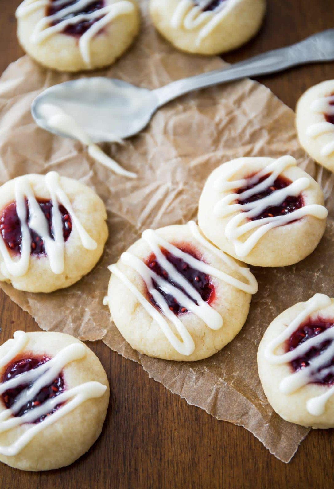

Raspberry Almond Thumbprint Cookies

Description
These raspberry almond thumbprint cookies are buttery almond and vanilla shortbread cookies filled with raspberry jam and drizzled with glaze.
Ingredients
- 1 cup unsalted butter
- 2/3 cup granulated sugar
- 1 teaspoon pure vanilla extract
- 1/2 teaspoon almond extract
- 1/4 teaspoon salt
- 2 1/4 cups all-purpose flour
- 1/2 cup raspberry jam
- 1 cup powdered sugar
- 1-2 tablespoon(s) milk
Steps
- Beat the butter until creamy. Add the sugar and vanilla and almond extracts. Add salt and flour. Slowly beat until a very soft dough is formed.
Press the dough down to compact it and tightly cover with plastic wrap to chill for 3 hours until firm.
- Preheat oven to 350 degrees Fahrenheit. Line baking sheets with parchment paper. Shape the cookie dough (1 tablespoon each) into balls.
Make an indentation with your thumb into each ball. Fill each with jam.
- Bake for 14-15 minutes. Allow to cool for at least 30 minutes before glazing.
- Whisk powdered sugar and milk until smooth. Drizzle over cooled cookies.